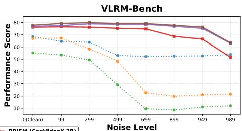

Through the PRISM：如果 noisy latents 已经编码可判别偏好，说明生成模型中间表示可作为 SSL/评估信号来源
挑战必须先 VAE decode 再用 pixel reward model 的做法，证明视频生成 backbone 的中间状态本身具有偏好判别能力。
Through the PRISM: Preference Representation in Intermediate States of Video Diffusion Models Haoxuan Wu, Lai Man Po, Mengyang Liu, Kun Li, Hongzheng Yang, Wei Liu；arXiv 元数据未稳定列机构。 arXiv 新增 + video diffusion latent preference 原文链接
Figureure 1 · : Comparison of video preference rewardingFig. 1: Comparison of video preference rewarding. The PRISM Framework. By taking the noisy latent $z _ { t } ,$ prompt $c ,$ and timestep t as inputs—perfectly aligning with standard diffusion models—PRISM directly outputs a reward signal within the latent space. Compared to conventional pipelines (upper), it avoids fully denoising to $x _ { 0 }$ and eliminates expensive VAE decoding, thereby preventing the unreliable evaluation of decoded noisy videos and achieving highly efficient, noise-resilient reward modeling.这张图概括 Through the PRISM 的整体方法流程。阅读时先看模块之间传递的训练信号，再看作者如何把目标拆成可优化的子问题。

Figureure 2 · : Preference alignment performance across various noise levels tFig. 2: Preference alignment performance across various noise levels t. We evaluate the preference accuracy of PRISM against state-of-the-art pixel-level reward models on (left) VideoGen-RewardBench and (right) VLRM-Bench. Conventional models (dotted lines), such as VideoScore2 and UnifiedReward, exhibit a significant performance drop or even complete collapse as the noise level increases (t → 1000). In contrast, our PRISM variants (solid lines) consistently maintain high accuracy throughout the entire denoising trajectory. Notably, even when utilizing a smaller backbone (e.g., Wan2.1-1.3B), PRISM significantly outperforms the strongest pixel-level baselines, demonstrating the superiority of leveraging generative latent priors for noiseaware preference modeling.这张图/表用于判断 Through the PRISM 的实验收益来自哪里。重点看替换、消融或跨模型设置下趋势是否一致，而不是只看单个最高分。